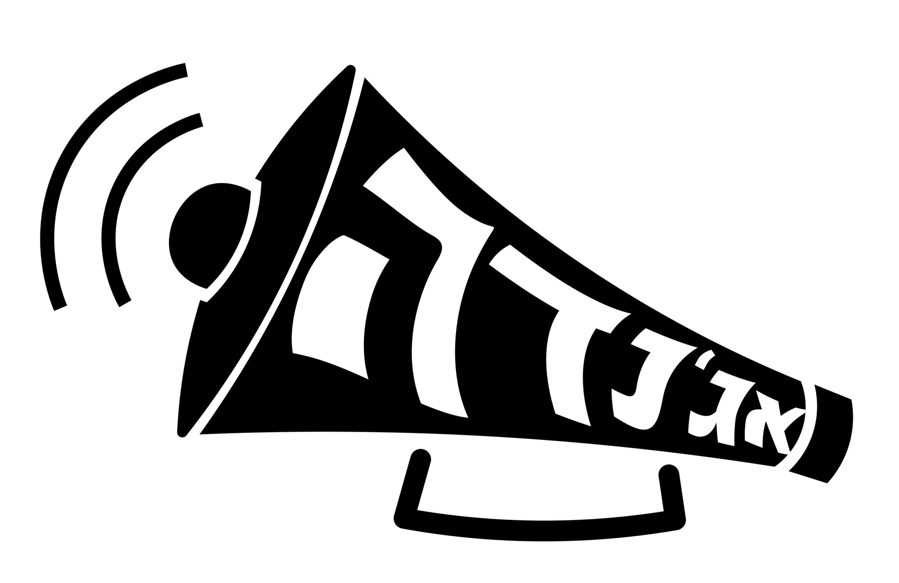
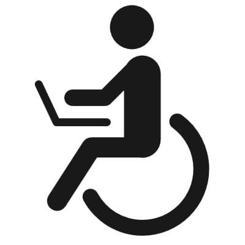
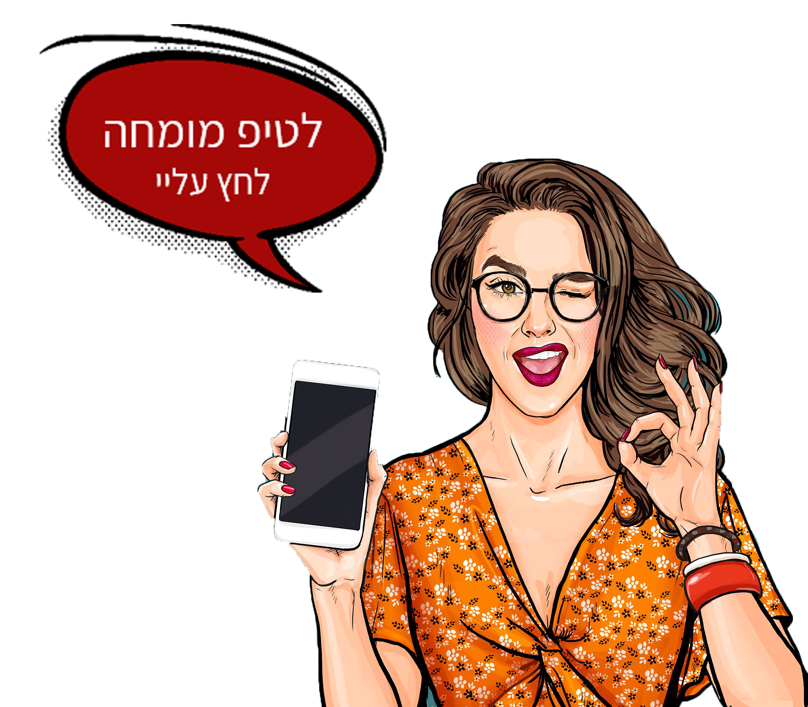
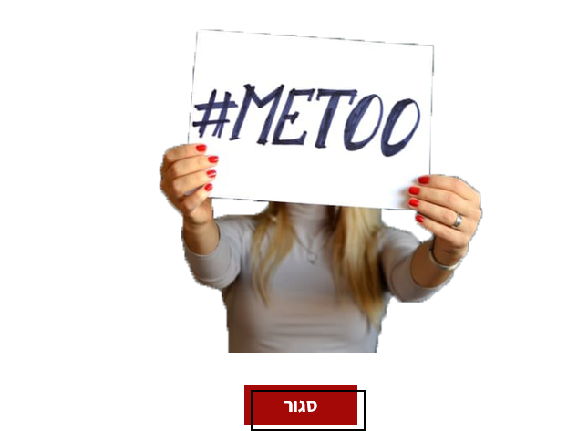
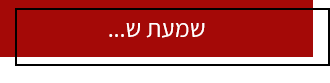

<!DOCTYPE html>
<html lang="he">
<head>
    <meta charset="utf-8" />
    <title>אג'נדה- רשתות חברתיות</title>
    <meta name="description" content="המדריך לאקטיביסט המתחיל" />
    <meta name="keywords" content="מחאה, אקטיביזם, ארגון מחאה, איך מארגנים הפגנה, הפגנה" />
    <meta name="author" content="קרן הולצמן, אפרת בנעטיה, דניאל כץ" />
    <meta name="viewport" content="width=device-width, initial-scale=1.0, user-scalable=yes">

    <!-- CSS -->
    <link rel="stylesheet" href="https://unpkg.com/purecss@1.0.1/build/pure-min.css" integrity="sha384-oAOxQR6DkCoMliIh8yFnu25d7Eq/PHS21PClpwjOTeU2jRSq11vu66rf90/cZr47" crossorigin="anonymous">

    <link href="styles/reset.css" rel="stylesheet" />
    <link href="styles/socialmedia.css" rel="stylesheet" />

    <!-- JS -->
    <script src="jScripts/jquery-1.12.0.min.js"></script>

    <link rel="icon" href="imges/favicon.png" />

</head>
<body>
    <div id="container">
        <article role="article">
            <div id="skip">
                <ul id="skip">
                    <li><a href="socialmedia.html#socialmedialink1">דלג לתוכן</a></li>
                </ul>
            </div>
            <header role="banner">
                <a href="index.html" id="text_decoration">
                    
                    <p id="text_logo">המדריך לאקטיביסט המתחיל</p><br />
                </a>

                <div>
                    <a href="Accessible_socialmedia-metoo.html">
                        
                    </a>
                </div>

                <nav role="navigation" aria-label="תפריט ניווט ראשי" id="navmain">
                    <ul>
                        <li>
                            <a class="noClick" href="#">איך מתחילים?</a>
                            <ul>
                                <li><a class="noClick" href="#">מגבשים רעיון</a></li>
                                <li><a class="noClick" href="#">מתחילים לחקור</a></li>
                                <li><a class="noClick" href="#">שאלות מנחות</a></li>
                            </ul>
                        </li>
                        <li>
                            <a class="noClick" href="#">יוצרים דיבור</a>
                            <ul>
                                <li><a href="socialmedia.html">רשתות חברתיות</a></li>
                                <li><a class="noClick" href="#">פונים לתקשורת</a></li>
                                <li><a class="noClick" href="#">מנהלים קמפיין</a></li>
                                <li><a href="mitug.html">ממתגים מחאה</a></li>
                            </ul>
                        </li>
                        <li>
                            <a class="noClick" href="#">מזיזים עניינים</a>
                            <ul>
                                <li><a class="noClick" href="#">מימון המונים</a></li>
                                <li><a class="noClick" href="#">יוצאים להפגין</a></li>
                                <li><a class="noClick" href="#">פונים לבכירים</a></li>
                            </ul>
                        </li>
                        <li>
                            <a href="success.html">סיפורי הצלחה</a>
                        </li>
                        <li>
                            <a href="aboutus.html">קצת עלינו</a>
                        </li>
                        <li>
                            <a href="contactus.html">
                                צרו קשר
                            </a>
                        </li>
                    </ul>
                </nav>
            </header>

            <nav class="navbc">
                <ol>
                    <li><a href="index.html">דף הבית</a></li>
                    <li><a href="#" class="noClick">יוצרים דיבור</a></li>
                    <li>רשתות חברתיות</li>
                </ol>
            </nav>
            <section>
                <h1 class="socialmediah1">
                    רשתות חברתיות
                </h1>
                <div id="socialmediaarea1">
                    <p class="socialmediaP">
                        זה לא סוד שלרשתות החברתיות היום יש תפקיד מרכזי בעיצוב מחאות ובהתפתחותן. <br />
                        הרשתות לא רק משמשות לחיבור בין אנשים אלא הן  כלי ליצירת שינויים חברתיים פוליטיים. <br />
                        דרך רשתות חברתיות אתם יכולים ליצור מודעות למטרה שאתם מקדמים, לגייס תמיכה ופעילים פוטנציאליים למאבק שלכם , להרים הפגנות ולפנות לנבחרי ציבור- בקלות.
                    </p>
                    <p class="socialmediaP">
                        פוליטיקאים נמצאים שם, התקשורת שם, אתם שם ובקיצור כולם שם.
                    </p>
                    <a href="socialmedia-TIP.html">
                        
                    </a>
                </div>
            </section>
            <section id="socialmediaposition1">
                <h3 class="socialmediah3">
                    אז איך אתם
                    <span class="socialmediah3bold">יוצרים דיבור</span>
                    דרך
                    <span class="socialmediah3bold">הרשתות החברתיות?</span>
                </h3>
                <h4 class="socialmediah4">
                    יוצרים תוכן ויראלי
                </h4>
                <p class="socialmediaP" id="socialmediaarea2">
                    אנשים לא משתפים מידע אלא סיפורים, תוכן שמעורר אצלם רגשות.
                    לכן המסר שלכם חייב להיות משובץ כחלק בלתי נפרד מסיפור שאנשים ירצו לספר.
                    רגשות כמו
                    <span class="socialmediaPbold">כעס, חרדה, התרגשות, הומור או פליאה</span>
                    מגבירים את הסיכוי משמעותית (כ-30%) לתוכן מכל סוג להיות מופץ.
                    לכן כשאתם רוצים ליצור
                    <span class="socialmediaPbold">מסר ויראלי</span>
                    כדאי שהוא יעורר את אחד מהרגשות האלו.
                </p>
                <p class="socialmediaP" id="socialmediaarea3">
                    לדוגמא, המטרה שלכם היא שישופר את מצב הפקקים בכבישים.
                    במקום פוסט מתלונן, חשבו לפרסם משפט כדוגמת : ״אתם מחכים שבועיים מהחיים שלכם ברמזורים אדומים״.
                    זוהי עובדה יוצאת דופן שיכולה לגרום לכעס ולמשוך תשומת לב כך שיש יותר סיכוי שישתפו אותה מאשר סתם עוד פוסט מתלונן רגיל.
                </p>
                <p class="socialmediaP" id="socialmediaarea3">
                    מבחינת קהל הוכח כי דווקא תוכן אשר רלוונטי באופן מובהק לקהל מצומצם עשוי להיות ויראלי יותר.
                    כלומר, תכוונו אל קהל היעד הספציפי שלכם, משם תנו כבר לפנאטים שלכם לעשות את עבודת ההפצה.
                </p>
                <div id="socialmediavidio1">
                    <iframe src="https://www.youtube.com/embed/TRbzGdu8hgw" frameborder="0" allow="accelerometer; autoplay; encrypted-media; gyroscope; picture-in-picture" allowfullscreen id="socialmediavidio"></iframe>
                </div>
            </section>
            <section id="socialmediaarea5">
                <h2 id="socialmediah2">
                    חוקי עשה ואל תעשה
                </h2>
                <h3 id="socialmediah3donotdo">
                    -בכתיבת פוסט ויראלי-
                </h3>
                <div id="socialmediaborderdo">
                    <h4 id="socialmediah4do">עשה</h4>
                    <div id="socialmediandoimg"></div>
                    <div id="socialmediadoarea">
                        <div id="socialmediaVpencilimg"></div>
                        <p id="socialmediado1">
                            פשוט פשוט פשוט –מסר צריך להיות כזה כך שכל אחד יבין בדקה או שתיים. כתבו כמו שאתם מדברים. זכרו - הציבור אליו אתם פונים נחשף להמון המון מסרים כל שעה אז אל תנסו להתחכם, מסר חייב ברור קצר וקליט .
                        </p>
                        <div id="socialmediaV1img"></div>
                        <p id="socialmediado2">
                            עברו על הטקסט שוב לפני הפרסום ותשאלו את עצמכם- האם הוא מעורר הזדהות? נותן מידע רלוונטי? מה יש בו שיגרום לאנשים לשתף עם כדי שהם לא יחמיצו משהו חשוב? אל תהיו מאלה שמעלים דברים רק בשביל להעלות דברים.
                        </p>
                        <div id="socialmediaV2img"></div>
                        <p id="socialmediado3">
                            צרפו תמונה/ לינק רלוונטי בסוף הפוסט.
                        </p>
                    </div>
                </div>
                <div id="socialmediabordernotdo">
                    <h4 id="socialmediah4notdo">אל תעשה</h4>
                    <div id="socialmediannotdoimg"></div>
                    <div id="socialmedianotdoarea">
                        <div id="socialmediaX1img"></div>
                        <p id="socialmediado1">
                            שגיאות כתיב, טעויות הקלדה, משפטים בלי פסיקים.
                        </p>
                        <div id="socialmediaX2img"></div>
                        <p id="socialmediado2">
                            דברו חלש:  אל תכתבו בצורה מתלהמת  עם סימני קריאה, כשיש לך טיעון טוב אתה לא צריך לצעוק אותו.
                        </p>
                        <div id="socialmediaX3img"></div>
                        <p id="socialmediado3">
                            אל תכתבו סביל: סביל הורס את הקשר עם הקורא. פועל פעיל הוא אקטיבי, שעושה וגורם לדברים לקרות.
                        </p>
                    </div>
                </div>
                <div id="socialmediawomanpointimg"></div>
                <p id="socialmediah3point">
                    <span class="socialmediah3bold">הנקודה היא כזו:</span>
                    אם התוכן שאתם  מעלים
                    <span class="socialmediah3bold">לא</span>
                    מעורר הזדהות / נותן מידע מוצק / <br />מגיע מתוך פנייה אישית  / מציע פתרון חלופי-
                    <span class="socialmediah3bold">לא ישתפו אותו</span>
                </p>
            </section>
            <section>
                <div id="socialmedialink3">
                    <div id="socialmediahashtagimg"></div>
                    <h4 id="socialmidia4hashtag">
                        כוחו של ההאשטאג
                    </h4>
                    <div class="socialmediaarea4">
                        <p class="socialmediaP">
                            <span class="socialmediaPbold">#</span> האשטאגים יוצרים באז,  את השיח ברשת שאתם כל כך רוצים ליצור.<br />
                            הם למעשה מרכזים את נקודת הגישה לתוכן שאתם מפרסמים ברשת.<br />
                            זוהי דרך מהירה ופשוטה לתייג פוסט, תגובה, תמונה או "ציוץ"  ולקשר אותם אל נושא המחאה שלך.
                        </p>
                        <h5 id="socialmediah5">
                            # איך זה עובד?
                        </h5>
                        <p class="socialmediaP">
                            למשל אתה אקטיביסט  שרוצה ליצור דיבור למחאה שלך שמטרתה היא לגרום לתחבורה ציבורית לפעול בשבת. תיוג פוסט ברשת ב- #הסעות בשבת, יגרום לכך שלחיצה על ההאשטאג תוביל את כל מי שלוחץ עליו למצוא כל מה שתויג תחתיו. פוסט, תגובה, תמונה או "ציוץ" ..
                            לדוגמא במחאת ה-ME TOO# ההאשטאג אפשר לקחת חוויות תקיפה מינית של נשים רבות וקיבץ אותם יחד תחת מטרייה אחת. כך באמצעות ההשאגטאג  אנשים ראו שלא מדובר במספר אירועים בודדים.
                        </p>
                        <p class="socialmediaP">
                            האשטאג שממוקם היטב לאורך קמפיין מחאתי  מספיק לפעמים לבד כדי ליצור באז מסיבי סביב הנושא ויכול לגרום לתנועת עוקבים גדולה שתגרום להאשטאג להפוך
                            <span id="socialmediahashtagbold">לויראלי.</span>
                        </p>
                        <p class="socialmediaP">
                            <span class="socialmediaPbold">#</span> אין להוריד מערכו של ההאשטאג, יש לו כוח המאפשר להגדיל את
                            <span class="socialmediahashtagextrafont">החשיפה</span>
                            וההשפעה של דפי אינסטגרם, פייסבוק , טוויטר , ובהתאם את החשיפה של
                            <span class="socialmediahashtagextrafont">המאבק</span>
                            שלכם.
                        </p>
                        <p id="socialmediahashtag">
                            #לא עומדים מהצד<br />
                            #החזירו את גלעד<br />
                            icebucketchallenge#<br />
                            blacklivesmatter#<br />
                            bringourboyshome#<br />
                            stayhome#<br />
                            jesuischarlie#
                        </p>
                        <div id="socialmediametooclose">
                            <p class="socialmediaPmetoo">
                                שחקנית מוכרת פרסמה פוסט על חוויות תקיפה מינית שעברה
                                בחייה ותייגה אותו תחת #MeToo . נשים נוספות שנתקלו
                                בהאשטאג זה, החלו לצייץ חזרה ושיתפו גם הן בסיפורים
                                אישיים על תקיפות מיניות שעברו בחייהן. פשוט ככל שיהיה,
                                האשטאג זה צויץ שוב ושוב על ידי 500,000 יוזרים
                                תוך 24 שעות אחרי פרסומו של הפוסט המקורי  והפך
                                לדבר הכי ויראלי שהיה באינטרנט ושדובר בשנים האחרונות.
                            </p>
                            <p class="socialmediaPmetoo">
                                המחאה ברשת הפכה לתנועה בינלאומית נגד
                                הטרדות מיניות שהתפשטה בכל העולם
                            </p>
                            <p id="socialmediaPmetoobold">
                                והכל התחיל מהאשטאג אחד....
                            </p>
                            <a href="socialmedia.html#socialmedialink2">
                                
                            </a>
                        </div>
                    </div>
                </div>
            </section>
            <section>
                <div id="socialmedialoveinstegramimg"></div>
                <h4 id="socialmediah4tactic1">
                    שימו
                    <span id="socialmediah4tactic2">חמש טקטיקות ליצור דיבור למחאה ברשתות חברתיות:</span>
                </h4>
                <div class="socialmediatacticarea">
                    <div id="socialmedialike1img"></div>
                    <p class="socialmediaP">
                        <span class="socialmediatacticpbold">עדכנו!</span>
                        אין דבר עצוב יותר בעולם הרשתות החברתיות מחשבון טוויטר או מדף פייסבוק נטוש.
                        עדכנו אותם בתדירות הכי גדולה שאתם יכולים,
                        <span class="socialmediaPhadgash">כתבו</span>
                        שם
                        <span class="socialmediaPhadgash">פוסטים</span>
                        באופן
                        <span class="socialmediaPhadgash">יומיומי</span>
                        והעלו לשם עדכונים שוטפים על התקדמות המאבק, הזמנה לפעילויות ועוד.
                        תדירות העדכונים הגבוהה תמשוך אליכם עוד עוקבים – כמובן, בתנאי שהפרסומים שלכם מעניינים.
                    </p>
                    <div id="socialmedialike2img"></div>
                    <p class="socialmediaP">
                        <span class="socialmediatacticpbold">חשבו על הקהל שלכם.</span>
                        טוויטר, פייסבוק או אינסטגרם?
                        חשבו מי קהל היעד אליו אתם רוצים לפנות ובחרו את הכלי שהכי מתאים.
                        אל תפלו למלכודת הגדולה מכולם :
                        <span class="socialmediaPhadgash">לא כולם אותו דבר.</span>
                        אם צריך התייעצו עם קולגות וחברי משפחה – איך הם היו מגיבים לפרסום שלכם.
                    </p>
                    <div id="socialmedialike3img"></div>
                    <p class="socialmediaP">
                        <span class="socialmediatacticpbold">תעדו את הפעילות שלכם:</span>
                        תעדו כל התפתחות או אירוע באמצעות
                        <span class="socialmediaPhadgash">. פוסטים, תמונות, סרטונים ושידור חי </span>
                        ברשתות החברתיות
                        העלו את התמונות לרשת, תייגו אנשים והזמינו אותם להיות חלק מהמאבק.
                    </p>
                    <div id="socialmediatwitterlogoimg"></div>
                    <p id="socialmediaPtiud">
                        תיעוד הפגנה מייצר כעס וגורם לאנשים להגיע להפגנה הבאה ולהיות נוכחים.
                        גם בתוך ההפגנות יש לרשתות חברתיות תפקיד מרכזי כאמצעי תיעוד.
                        לא צריך להזמין את התקשורת שתדווח על זה,
                        הרשת מאפשרת בצורה קלה להפוך מחאה למשהו שניתן לראות אותו בשידור חי.
                        כל אחד יכול לצלם סרטון וידאו ולהעלות ליוטיוב, טוויטר, אינסטגרם או פייסבוק...
                    </p>
                    <div id="socialmedialike4img"></div>
                    <p class="socialmediaP">
                        <span class="socialmediatacticpbold">היזהרו בדבריכם:</span>
                        כשאתם משיבים למישהו שפנה אליכם באופן פומבי – בטוויטר, או על הקיר בפייסבוק, שימו לב היטב איך ומה אתם עונים לו – כי כולם יכולים לקרוא אתכם. חשבו על איך הדברים שלכם עלולים להיתפס  בקרב אוכלוסיות בעלות רגישות יתר – כי הפעילים שלהן לא יהססו לתפוס אתכם במילתכם, גם אם לא התכוונתם.
                    </p>
                    <div id="socialmedialike5img"></div>
                    <p class="socialmediaP">
                        <span class="socialmediatacticpbold">היו פעילים:</span>
                        עשו
                        <span class="socialmediaPhadgash">"לייק"</span>
                        לעמודים אחרים  בתחום המאבק שלכם (אפילו של מתחרים! פרגון זו לא תכונה מגונה!) .
                        התערבו בשיח הנוצר ברשת.
                        אבל עשו זאת בחן – אל תידחפו לשיחה בכוח  והגיבו רק אם יש לכם משהו מהותי להוסיף.
                    </p>
                </div>
            </section>
            <section id="socialmediacenter">
                <h2 id="socialmediah2petel">
                    רשתות חברתיות- הכי כדאי לכם!
                </h2>
                <div id="socialmedia3img"></div>
                <section class="socialmediaareaborder">
                    <h5 class="socialmediah5reshatot1">
                        למה כדאי לי
                        <span class="socialmediah5reshatot2">פייסבוק?</span>
                    </h5>
                    <p class="socialmediaP">
                        פייסבוק הוא כבר מעבר לרק חיבור בין אנשים..
                        משתמשים בפייסבוק להפצת הודעות כדי שיתפשטו במהירות.
                        גם בתוך מדינות וגם בין מדינות.
                        הפגנות ועצרות מתועדות ברשת כל הזמן וכך מופצות ברחבי העולם.
                    </p>
                    <div id="socialmediafacebppkexampleimg"></div>
                    <p class="socialmediaP" id="socialmediagilad">
                        קבוצת פייסבוק 'יום בלבן' 2011
                        השאירה במודעות את החזרת גלעד שליט
                    </p>
                    <a href="socialmedia-facebook.html">
                        
                    </a>
                </section>
                <section class="socialmediaareaborder">
                    <h5 class="socialmediah5reshatot1">
                        למה כדאי לי
                        <span class="socialmediah5reshatot2">אינסטגרם?</span>
                    </h5>
                    <p class="socialmediaP">
                        גם דרך פלטפורמת האינסטגרם נושאים חברתיים ופוליטיים קיבלו חשיבות וצברו תאוצה.
                        אינסטגרם זו דרך מעולה להגדיל את כמות התומכים למטרה שאתם מקדמים וזוהי אפילו דרך קלה לגייס מפורסמים .
                        כל מה שהם צריכים לעשות זה רק לפרסם פוסט,  סטורי, תמונה או לעשות לייק...
                        מסר שמוצג בצורה חזקה דרך האינסטגרם יכול להביא לשינוי במציאות .
                    </p>
                    <div id="socialmediainstegramexampleimg"></div>
                    <p class="socialmediaP" id="socialmedianaama">
                        בעקבות פרשת נעמה יששכר ב-2019 -
                        תיוג שצבר תאוצה והעביר
                        את המסר שאותו דף בא להציג
                    </p>
                    <a href="socialmedia-instegram.html">
                        
                    </a>
                </section>
                <section class="socialmediaareaborder">
                    <h5 class="socialmediah5reshatot1">
                        למה כדאי לי
                        <span class="socialmediah5reshatot2">טוויטר?</span>
                    </h5>
                    <p class="socialmediaP">
                        השימוש בטוויטר הפך להיות כלי מרכזי לצורך הובלת מחאות ומהפכות פוליטיות
                        והתארגנות מהירה של פעילים המתגייסים למען מטרה מוגדרת
                        וזאת בעקבות האפשרות לפרסם ולשתף כל תוכן שרוצים מבלי יכולת אכיפה אחר המידע שמתפרסם.
                    </p>
                    <div id="socialmediatwitterexampleimg"></div>
                    <p class="socialmediaP" id="socialmediaaviv">
                        "ציוצים" ממחאת<br />
                        "אביב העמים הערבי"- 2010
                    </p>
                    <a href="#">
                        
                    </a>
                </section>
            </section>
            <footer>
                <ul>
                    <li><a href="aboutus.html">קצת עלינו</a></li>
                    <li><a href="map.html">מפת אתר</a></li>
                    <li><a href="contactus.html">צרו קשר</a></li>
                </ul>
            </footer>
        </article>
    </div>
</body>
</html>